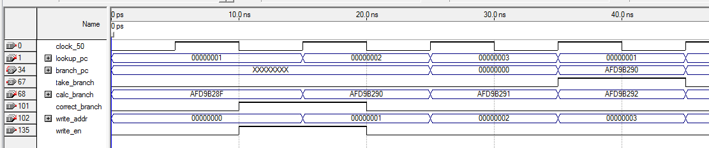

Branch Predictor
The branch predictor unit will allow for a noticable speedup within the 5 stage pipeline by predicting branches taken or not taken. The predictor will contain
a cache of the last 16 branch instructions, their target branch addresses, and whether they were previously taken or not taken. If the predictor predicts a branch instruction
incorrectly, only a one cycle delay is incurred, making this a very powerful way to speedup instructions in the pipeline.
The branch predictor unit will reside within the IF (Instruction Fetch) stage. It will predict branches taken/not taken, and will be modified
from the ID (Instruction Decode) stage.
VHDL Code
---------------------------------------------------------------------------------------------------
-- Authors: Cache Money
--
-- This component will act as the branch predictor for our pipelined processor.
--
-- Pins:
--
-- lookup_pc : To be connected to the output of the program counter.
-- write_addr : To be connected to the instruction address existing in the ID stage.
-- write_en : Set by the ID stage, writes on every branch instruction when the predicted
-- branch condition is different than that of the actual.
-- clock_50 : Clock input
-- calc_branch : calculated pc value that is written from the ID stage once the PC value is
-- added to the immediate value.
-- correct_branch : Signal from the ID stage from the comparator specifying if the branch
-- was taken or not.
-- take_branch : Take Branch Prediction signal - specifies whether to take the branch.
-- branch_pc : The target PC to branch to.
---------------------------------------------------------------------------------------------------
library ieee;
use ieee.std_logic_1164.all;
use ieee.std_logic_unsigned.all;
entity BranchPredictor is
port
(
lookup_pc : in std_logic_vector(31 downto 0);
write_addr : in std_logic_vector(31 downto 0);
write_en : in std_logic;
clock_50 : in std_logic;
calc_branch : in std_logic_vector(31 downto 0);
correct_branch : in std_logic;
take_branch : out std_logic;
branch_pc : out std_logic_vector(31 downto 0)
);
end BranchPredictor;
architecture Behavior of BranchPredictor is
type pc_address_tag is array(0 to 15) of std_logic_vector(31 downto 4);
type predicted is array(0 to 15) of std_logic_vector(31 downto 0);
type pc_valid is array(0 to 15) of std_logic;
type branch_taken is array(0 to 15) of std_logic;
signal pc_tag : pc_address_tag;
signal predicted_pc : predicted;
signal valid : pc_valid;
signal taken : branch_taken;
begin
process(lookup_pc)
variable index : integer;
begin
index := conv_integer(lookup_pc(3 downto 0));
if valid(index) = '1' and pc_tag(index) = lookup_pc(31 downto 4) then
branch_pc <= predicted_pc(index);
take_branch <= taken(index);
else
take_branch <= '0'; -- default - predict not taken
end if;
end process;
process(clock_50)
variable index : integer;
begin
index := conv_integer(write_addr(3 downto 0));
if clock_50'event and clock_50 = '1' and write_en = '1' then
pc_tag(index) <= write_addr(31 downto 4);
valid(index) <= '1';
taken(index) <= correct_branch;
predicted_pc(index) <= calc_branch;
end if;
end process;
end Behavior;
Verification

In the above picture, the lookup_pc corresponds to the value of the program counter.
Correct operation can be observed from the waveform, when lookup_pc is set to '1' again at 35 ns.
Since the cache was "written" from the ID stage at 15 ns,
(write_addr = 1, write_en is high, correct_branch = '1' => branch was taken), a cache hit is encountered at 35 ns
when lookup_pc is 1 again. Therefore, the take_branch is set to high,
implying that the branch is predicted to be taken.